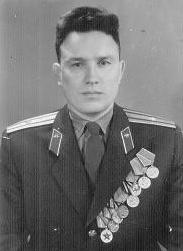

Петряшов Федор Иванович
Родился 2 января 1922 года в д.Михайловский выселок Дорожковского сельсовета. После окончания Кичменгско-Городецкой школы и учительских курсов в г. Никольск стал работать учителем начальных классов. В июне 1940 года призывается в Красную армию и проходит курсы пулемётчиков. На фронтах Великой Отечественной войны с 27 июня 1941 года. Защитник Ленинграда. В августе 1944 года направлен на учёбу в Московское военное училище МВД на отделение связи, которое окончил в 1947 году. В числе лучших курсантов принимал участие в Параде Победы 24 июня 1945 года. Военная служба проходила в Эстонии, где он и остался в дальнейшем жить.